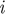
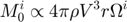
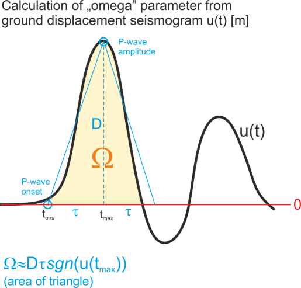
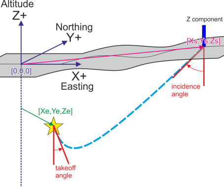

Input focimt ASCII file formats
Contents
focimt application, focimt.m as well as hybridmt.m routines are capable to read two types of ASCII input files:
- RAW input file contains all input data necessary to perform the seismic moment tensor inversion in time domain.
- 1D velocity model input file uses 1D velocity model and station/event locations provided in Cartesian coordinate system to perform the 1D ray-tracing and to calculate the auxiliary phase data for the seismic moment tensor inversion (takeoff angle, incidence angle, azimuth as well as distance along the ray path for each phase).
Both input file formats starts with a header line containing information about earthquake that is followed by phase lines containing phase data. User may specify multiple header-phase blocks to process or refine multiple events at once. The ASCII input file formats are described in details in the following sections. The input files can be read by auxiliary functions readraw.m and readvel1d.m.
RAW ASCII input file
Raw input file is composed of a header line containing basic information about the seismic event. This line is followed by a limited number of phase lines containing phase information necessary for the seismic moment tensor inversion. The input text file may contain multiple blocks header-phases if the user wants to process more than one earthquake at once. The latter type of file containing multiple seismic events is actually required once User aims to refine seismic moment tensors by means of the hybrid moment tensor technique and use the hybridmt.m routine. ASCII input file in RAW format can be read using auxillary readraw.m routine and converted to moment tensor inversion input cell array used across the whole package, if necessary.
The RAW ASCII input file generally looks as follows:
fileid1 n station_1 component_1 phase_1 omega_1 azm_1 aoi_1 tko_1 v_1 r_1 rho_1 station_2 component_2 phase_2 omega_2 azm_2 aoi_2 tko_2 v_2 r_2 rho_2 ... station_n component_n phase_n omega_n azm_n aoi_n tko_n v_n r_n rho_n fileid2 n station_1 component_1 phase_1 omega_1 azm_1 aoi_1 tko_1 v_1 r_1 rho_1 station_2 component_2 phase_2 omega_2 azm_2 aoi_2 tko_2 v_2 r_2 rho_2 ... station_n component_n phase_n omega_n azm_n aoi_n tko_n v_n r_n rho_n ...
The header line contains only two parameters:
| fileid | string | Event id string. The parameter contains a *UNIQUE* alphanumeric string to identify the seismic event. As the string may be used (depending on parameters passed to hybridmt or focimt programs) to create a directory where event-specific results will be stored, it is necessary to use only characters that can be used to create files/directories under specific file system. |
| n | integer | Number of following lines containing phase information data. |
The header line is follower by n lines containing phase information data:
| station | string | Station name. As the station is used in graphical representation of seismic moment tensor solution, short station names are recommended. |
| component | string | Station component name. Currently only vertical components are supported, and the column is basically ignored by either |fociMT| or |hybridmt| routines. However, future version of |fociMT| and |hybridMT| will use different phase. |
| phase | string | Phase identifier. Currently only P phases are supported, therefore only 'P' value is accepted by application. The remaining values are ignored. |
| omega | float | Area below the first P-wave ground displacement pulse together with sign information. This value is proportional to the spectral level in Fourier domain, and, overall, proportional to the seismic moment observed at a certain station including additional sign information about amplitude polarity. The unit of omega is [m * s] (meter times seconds). The detailed explanation of omega parameter is shown below. |
| azm | float | Azimuth of the vector pointing from earthquake to the station. The value is measured in degrees, positive from north towards east. |
| aoi | float | Angle of incidence to the sensor measured in degrees from down direction (towards center of Earth). The seismic ray pointing directly up, perpendicular towards the surface has 0 degrees incidence angle. |
| tko | float | Takeoff angle measured in degrees from down (towards center of Earth) direction. The seismic ray leaving the source purely up (towards earth surface) has takeoff angle of 180 degrees. The ray leaving earthquake source towards center of Earth has a takeoff angle of 0 degrees. |
| vel | float | Phase velocity in the source area in [m/s]. This value is used to calculate seismic moment from omega parameter. |
| r | float | Distance along the ray from the source to the station [m]. This value is used to calculate seismic moment from omega parameter. |
| rho | float | Rock density in the source area. This value is used to calculate seismic moment from omega parameter. |
The key parameter in phase input data is omega. This parameter is the area of the first P-wave GROUND DISPLACEMENT pulse (in time domain), or equivalently the spectral level taken from the amplitude spectrum of ground displacement waveform of P-wave. The unit of omega is [m * s], i.e. meter times second. The omega parameter contains additional information on the SIGN of first P-wave pulse (omega is positive for ground motions away from the source and negative for motions towards the seismic source). The absolute value of omega provided in ASCII input files is therefore somehow proportional to the seismic moment observed at a particular station  (we neglect here many important effects related to station-receiver geometricy and radiation - we just aim to emphasize general meaning of omega!):

As indicated above, omega must be calculated from GROUND DISPLACEMENT waveform calibrated to the unit of meters [m]. This can be achieved by integrating the ground displacement pulse starting from P-wave onset time to first zero crossing after the maximum amplitude (yellow shaded area in the figure below). However, in case of simple impulsive source time functions it is typically not necessary to calculate the integral. Instead, the amplitude of first P-wave pulse D in meters [m] (including sign information) may be taken easily from ground displacement seismogram and multiplied by the rise time (i.e. the time interval between the P-wave onset and P-wave amplitude, t_max-t_ons in seconds [s] in the figure below). In this case, the integral of the P-wave pulse is simply replaced by the area of the triangle (blue lines in the figure below). Please note once again the unit of omega is [m * s], as we multiply the amplitude in [m] by the duration in [s].
The sign of "omega" is in accordance with the seismological convention, i.e. it is positive for the positive first P-wave ground displacement amplitude (i.e. ground motion AWAY from the seismic source) and negative otherwise (ground motion TOWARDS the seismic source).

Takeoff angle and angle of incidence follow the typical seismological conventions. The schematic figure presenting both angles is shown below:

The example of input file in RAW ASCII format:
testmech 20 W1 Z P 8.1579314473706e-007 20.0 160.0 20.0 5000 3000.00 2900 W2 Z P -6.8673365691379e-007 80.0 160.0 20.0 5000 3000.00 2900 W3 Z P -8.7312547285917e-007 140.0 160.0 20.0 5000 3000.00 2900 W4 Z P -2.2167789675607e-007 200.0 160.0 20.0 5000 3000.00 2900 5 Z P 1.1069303997884e-007 260.0 160.0 20.0 5000 3000.00 2900 6 Z P 9.617722655266e-007 320.0 160.0 20.0 5000 3000.00 2900 7 Z P 5.816403152331e-007 20.0 30.0 150.0 5000 3000.00 2900 8 Z P 5.9484552418295e-007 80.0 30.0 150.0 5000 3000.00 2900 A9 Z P -7.0384473729451e-007 140.0 30.0 150.0 5000 3000.00 2900 C10 Z P -7.0656157910976e-007 200.0 30.0 150.0 5000 3000.00 2900 C11 Z P 1.5849903479442e-006 260.0 30.0 150.0 5000 3000.00 2900 C12 Z P 1.5745019808096e-006 320.0 30.0 150.0 5000 3000.00 2900 C13 Z P 1.9286895552236e-007 20.0 130.0 50.0 5000 3000.00 2900 14 Z P -2.7763323964771e-006 80.0 130.0 50.0 5000 3000.00 2900 D17 Z P -1.9406208284731e-006 260.0 130.0 50.0 5000 3000.00 2900 D18 Z P -2.565372376189e-007 320.0 130.0 50.0 5000 3000.00 2900 21 Z P 5.1376195957182e-007 140.0 80.0 100.0 5000 3000.00 2900 22 Z P 1.6575456762096e-007 200.0 80.0 100.0 5000 3000.00 2900 23 Z P 1.1523550907002e-006 260.0 80.0 100.0 5000 3000.00 2900 24 Z P 6.9418020992634e-007 320.0 80.0 100.0 5000 3000.00 2900
The examples of reading RAW input files for the purpose of the seismic moment tensor inversion with focimt application are shown in Using focimt command line application section.
1D velocity model ASCII input file
Similarly to the RAW input file format, 1D velocity model input file also starts with a header line describing basic information on seismic event and it is followed by limited number of lines describing phase information. The main difference between RAW input format and 1D velocity model format is that in the latter case the User do not need to specify all geometrical parameters such as azimuth, takeoff angle, distances along the seismic ray or the angles of incidence. Instead, these parameters are calculated using 1D velocity model provided. ASCII file in 1D velocity model format can be read using auxillary routine readvel1d.m.
The 1D velocity model ASCII input file syntax looks as follows: fileid N e_northing e_easting e_z density station component phase omega s_easting s_northing s_z station component phase omega s_easting s_northing s_z ... station component phase omega s_easting s_northing s_z fileid N e_northing e_easting e_z density station component phase omega s_easting s_northing s_z station component phase omega s_easting s_northing s_z ... station component phase omega s_easting s_northing s_z ...
The header line contains following parameters:
| fileid | string | Event id string. The parameter contains *UNIQUE* alphanumeric string to identify the seismic event. As the string may be used (depending on parameters passed to |hybridmt| or |focimt| programs) to create a directory where event-specific results will be stored, it is necessary to use only characters that can be used to create files/directories under specific file system. |
| N | integer | Number of following lines containing phase information data. |
| e_northing | float | Northing component of earthquake hypocenter location in the local Cartesian coordinate system [m]. The value must increase towards north. |
| e_easting | float | Easting component of earthquake hypocenter location in the local Cartesian coordinate system [m]. The value must increase towards east |
| e_depth | float | Depth component of earthquake hypocenter location in local cartesian coordinate system [m]. The value must increase towards up (i.e. if mean sea level is 0 in the local Cartesian coordinate system chosen, the negative values correspond to the hypocenter below the mean sea level) |
| density | float | Density in the seismic source area [kg/m3]. |
The header line is followed by n lines containing phase information data:
| station | string | Station name. As the station is used in graphical representation of seismic moment tensor solution, short station names are advisable. |
| component | string | Station component name. Currently only vertical components are supported, and the column is basically ignored by either |fociMT| or |hybridmt| routines. However, future version of |fociMT| and |hybridMT| will use different phase. |
| phase | string | Phase identifier. Currently only P phases are supported, therefore only 'P' value is accepted by application. The remaining values are ignored. |
| omega | float | Area below the first P-wave ground displacement pulse together with sign information. This value is proportional to the spectral level in Fourier domain, and, overall, proportional to the seismic moment observed at a certain station including additional sign information about amplitude polarity. The unit of omega is [m * s] (meter times seconds). The detailed explanation of omega parameter is shown above. |
| s_northing | float | Northing component of station coordinate in the local Cartesian coordinate system [m]. The station coordinate must be in the same system as earthquake northing coordinate provided in the event header line |
| s_easting | float | Easting component of station coordinate in the local Cartesian coordinate system [m]. The station coordinate must be in the same system as earthquake northing coordinate provided in the event header line |
| s_depth | float | Depth component of station coordinate in the local Cartesian coordinate system [m]. The station coordinate must be in the same system as earthquake northing coordinate provided in the event header line |
Here is example of input file for hybridmt.m, focimt.m as well as for focimt application in 1D velocity model format:
134_044_+163 25 0 0 -1500 2700 S01 Z P -3.4116906326339e-007 -10000 -10000 0 S02 Z P -3.7814556483238e-007 -10000 -5000 0 S03 Z P -5.0939122438081e-007 -10000 0 0 S04 Z P -2.7462338649334e-007 -10000 5000 0 S05 Z P 3.2166275730773e-007 -10000 10000 0 S06 Z P -1.2841376369079e-007 -5000 -10000 0 S07 Z P -6.7801192106985e-007 -5000 -5000 0 S08 Z P -2.0756006966737e-006 -5000 0 0 S09 Z P -4.2127683545031e-007 -5000 5000 0 S10 Z P -4.1841523522169e-008 -5000 10000 0 S11 Z P 3.905562102742e-008 0 -10000 0 S12 Z P 2.0061444414936e-007 0 -5000 0 S13 Z P -5.7225282386188e-006 0 0 0 S14 Z P -1.6899600936722e-007 0 5000 0 S15 Z P -1.3448018845833e-008 0 10000 0 S16 Z P 3.8527723071411e-008 5000 -10000 0 S17 Z P -4.5116743747675e-008 5000 -5000 0 S18 Z P -1.0622893299273e-006 5000 0 0 S19 Z P -5.0292277936872e-007 5000 5000 0 S20 Z P -1.1584426977891e-007 5000 10000 0 S21 Z P -1.0162790980247e-006 10000 -10000 0 S22 Z P -1.6473470781745e-007 10000 -5000 0 S23 Z P -3.6544904262446e-007 10000 0 0 S24 Z P -3.0215676249735e-007 10000 5000 0 S25 Z P -9.6393340287165e-007 10000 10000 0
The examples of reading 1D velocity model input files for the purpose of the seismic moment tensor inversion with focimt application are shown in section Using focimt command line application.